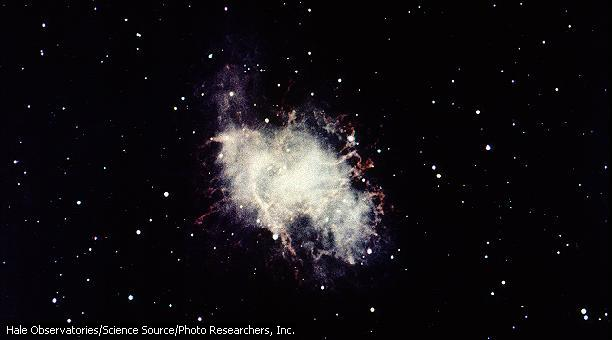

Nova y supernova (en latín stella nova, ‘estrella nueva’), dos clases de fenómenos explosivos que tienen lugar en algunas estrellas. Una nova es una estrella que aumenta enormemente su brillo de forma súbita y después palidece lentamente, pero puede continuar existiendo durante cierto tiempo. Una supernova exhibe el mismo tipo de comportamiento, pero la explosión destruye o altera de forma profunda a la estrella. Las supernovas son mucho más raras que las novas, que se observan con bastante frecuencia en las fotografías del cielo.

Una supernova que explota deja tras de sí una nube de material gaseoso que se expande rápidamente llamada nebulosa. La nebulosa del Cangrejo se creó cuando explotó una estrella en nuestra galaxia. La luz de la explosión fue observada por astrónomos chinos en el año 1054. En el centro de la nebulosa se halla un púlsar, una estrella densa que gira a gran velocidad.
Nova
Antes de la era de la astronomía, a una estrella que aparecía súbitamente donde antes no se había visto nada, se le llamaba nova, o ‘estrella nueva’. Éste es un nombre inapropiado, ya que estas estrellas existían mucho antes de que se pudieran ver a simple vista. Los astrónomos consideran que quizá existan una docena de novas en la Vía Láctea, la galaxia de la Tierra, cada año, pero dos o tres de ellas están demasiado lejos para poder verlas o las oscurece la materia interestelar. En efecto, a las novas se las observa con más facilidad en otras galaxias cercanas que en la nuestra. Se les llama novas de acuerdo con el año de su aparición y la constelación en la que surgen. De forma característica, una nova incrementa en varios miles de veces su brillo original en cuestión de días o de horas. Después entra en un periodo de transición, durante el cual palidece, y cobra brillo de nuevo; a partir de ahí palidece poco a poco hasta llegar a su nivel original de brillo.
Las novas son estrellas en un periodo tardío de evolución. Se puede considerar que son un tipo de estrellas variables. En apariencia se comportan así porque sus capas exteriores han formado un exceso de helio mediante reacciones nucleares y se expande con demasiada velocidad como para ser contenida. La estrella despide de forma explosiva una pequeña fracción de su masa como una capa de gas (la causa del aumento de brillo) y entonces se normaliza. La estrella restante es típicamente una enana blanca y por lo general se cree que es el miembro más pequeño de un sistema binario (dos estrellas), sujeto a una continua disminución de materia de la estrella más grande. Quizá este fenómeno suceda siempre con las novas enanas, que surgen una y otra vez a intervalos regulares de unos cientos de días.
Las novas en general muestran una relación entre su máximo brillo y el tiempo que tardan en palidecer en una cierta cantidad de magnitudes. Mediante mediciones de las novas más cercanas de las que conocemos la distancia y el brillo, los astrónomos pueden utilizar las novas de otras galaxias como indicadores de la distancia de esas galaxias.
Supernova
La explosión de una supernova es mucho más espectacular y destructiva
que la de una nova y mucho más rara. Estos fenómenos son poco
frecuentes en nuestra galaxia, y a pesar de su aumento de brillo en un factor
de miles de millones, sólo unas pocas se pueden observar a simple vista.
Hasta 1987 sólo se habían identificado realmente tres a lo largo
de la historia, la más conocida de las cuales es la que surgió
en 1054 d.C. y cuyos restos se conocen como la nebulosa del Cangrejo. Las
supernovas, al igual que las novas, se ven con más frecuencia en otras
galaxias. Así pues, la supernova más reciente, que apareció
en el hemisferio sur el 24 de febrero de 1987, surgió en una galaxia
satélite, la Gran Nube de Magallanes. Esta supernova, que exhibe algunos
rasgos insólitos, es hoy objeto de un intenso estudio astronómico.
Los mecanismos que producen las supernovas se conocen menos que los de las novas, sobre todo en el caso de las estrellas que tienen más o menos la misma masa que el Sol, las estrellas medias. Sin embargo, las estrellas que tienen mucha más masa explotan a veces en las últimas etapas de su rápida evolución como resultado de un colapso gravitacional, cuando la presión creada por los procesos nucleares dentro de la estrella ya no puede soportar el peso de las capas exteriores. A esto se le denomina supernova de Tipo II.
Una supernova de Tipo I se origina de modo similar a una nova. Es un miembro de un sistema binario que recibe el flujo de combustible puro al capturar material de su compañero.
De la explosión de una supernova quedan pocos restos, salvo la capa de gases que se expande. Un ejemplo famoso es la nebulosa del Cangrejo; en su centro hay un púlsar, o estrella de neutrones que gira a gran velocidad (véase Estrella: Púlsares y estrellas de neutrones). Las supernovas son contribuyentes significativos al material interestelar que forma nuevas estrellas.